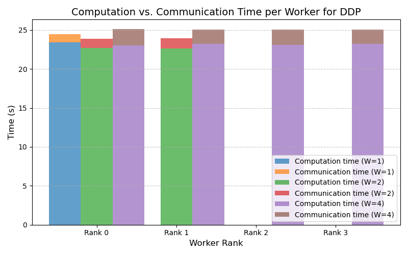
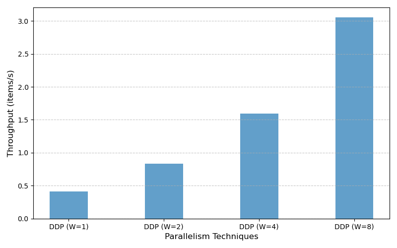
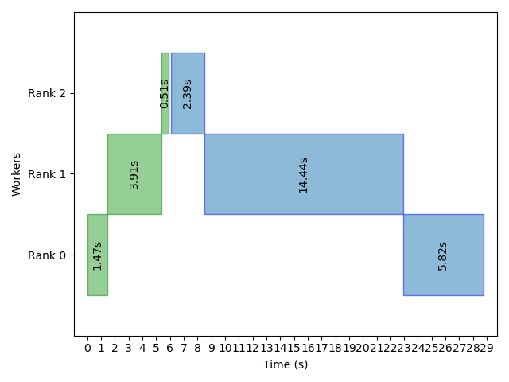
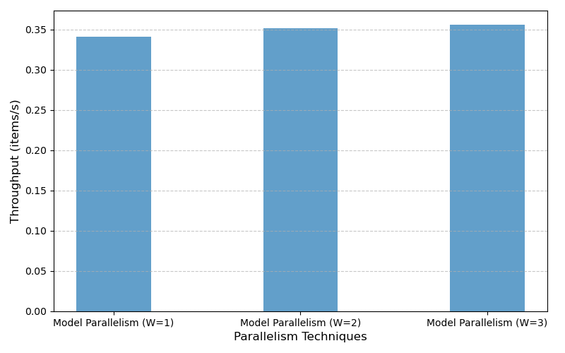
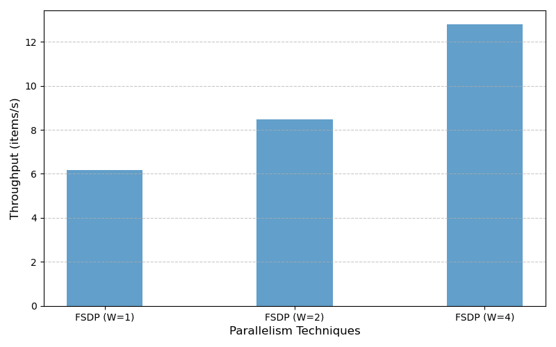
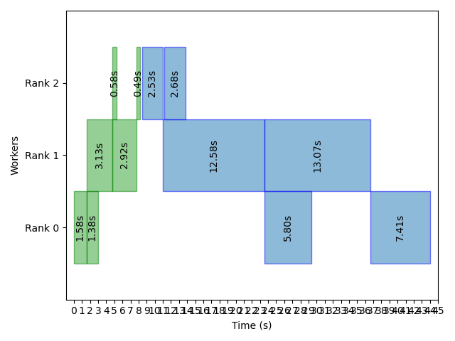
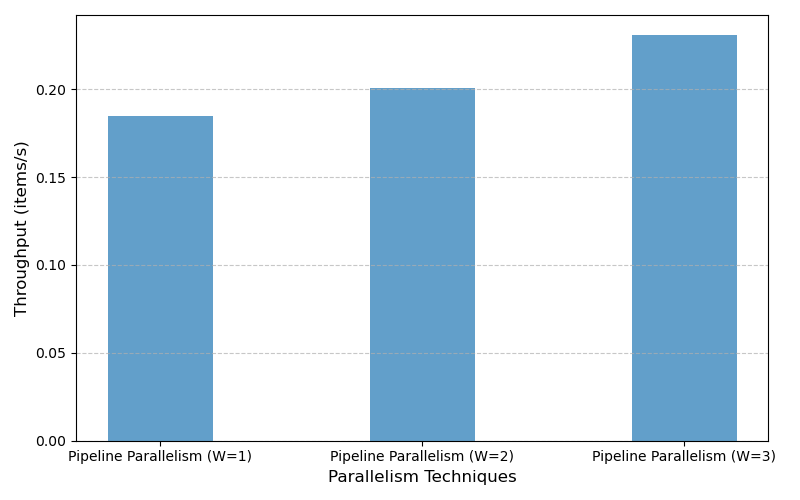

Parts 1-2 (correctness only) due Tuesday, February 4th at 6:00pm EST
All parts due Wednesday, February 19th at 6:00pm EST
Introduction
With
increasingly larger models and training data becoming the norm, it has
become challenging to train machine learning models efficiently due to
constraints in computational resources and memory. These challenges have
led to the development of various parallelism strategies to distribute
computation and memory usage across multiple devices or nodes.
In
this assignment, you will explore two common parallelism techniques in
training machine learning models: data parallelism and model
parallelism. After this, you will explore fully sharded data parallelism
and pipeline parallelism, which address some of the limitations with
data and model parallelism.
Due dates:
This assignment has two due dates, one as an initial check in (deliverables described below), and one where the final assignment will be submitted. You cannot use late hours on the initial check in.
Initial check in due on 2/04/2025 at 6 PM
Final assignment due on 2/19/2025 at 6 PM
The official late policy is described on the website,
in terms of the total number of late hours and how they are split
across assignments. The grading server takes care of accounting for
these across assignments and showing you how many are leftover!
Deliverables for Initial Check-In:
For the initial check-in, you will need to submit your code to
the grading server with the implementation tasks in Part 1 (DDP) and
Part 2 (model parallel) completed.
We will run the correctness tests for the DDP and Model Parallel; your implementation should be working correctly by the time the check-in is due
It is ok if the code does
not pass the correctness tests; we are mostly looking to see that you
have made an effort to complete both parts. We recommend at least
getting through these correctness tests, so you have time for the rest
of the assignment!
You do not need to finish the performance analysis sections or conceptual question sections within Parts 1 and 2 for the initial check-in
Deliverables for Final Assignment:
For the final submission, you will need to submit your code
for all parts of the assignment to the grading server, and the writeup
containing your generated graphs, explanations of the generated graphs,
and answers to the math/conceptual questions.
These questins are included in the README.md of the assignment repository; simply fill in your answers and graphs directly on the README.md.
We are still in the process of setting up the grading server;
we will post instructions on registering with the grading server later
this week.
We potentially hope to have a way for you to submit runs of
any parts of the assignment below so you can generate the data to graph
on the grading server; we will have more information on this later.
Learning Goals
Learn about some of the different ways to parallelize training
machine learning models, and understand their tradeoffs with respect to
the following:
Memory Overhead: does this parallelism method require replicating any model state, causing extra memory overhead as we scale to multiple nodes?
Communication Overhead: does
this parallellism method require any communication between workers to
synchronize any model state, which limits the scalability of the
training method?
Get hands on experience implementing these methods in PyTorch and measuring the performance of your implementations.
A note about resources: The assignment will use CPUs
to demonstrate parallel training. Because of this, the observed
speedups may not actually match what one would see on a GPU. However, we
have designed the questions and explorations in the assignment for you
to understand what the method should be doing,
so later, if you are ever in a situation where you use one of these
methods for parallel training, you have a better understanding of its
tradeoffs.
Assignment Installation
The Github classroom link with the starter code can be found here.
Using Containers for Development
Make sure you have a container management tool installed locally (e.g., Docker or Podman). Then, use the ./run_docker scripts to pull and run containers as needed. (You may need to use sudo or dos2unix if you see any related error.)
This will download images according to your platform.
For running the container: You need to specify the mount directory to use the current working directory within the container. Note that
If you do not specify any parameter, it will run the container with 4
CPUs and 4 GB memory, with the current directory as the mount directory.
./run_docker run -s
[mount_dir] -c [cpu_number] -m [memory_size]
After executing this command, you should be able to access the container and see your work files in the current directory.
Running instructions manually if the script goes wrong:
You can try to run the following command (if you are using Podman, just replace docker to pod):
For linux/amd architecture:
docker pull cs1390mlsys/cs1390
docker tag cs1390mlsys/cs1390 cs1390
docker run -it --shm-size=1g --cpus=[cpu_num] -m=[memory] --mount type=bind,source=./,target=/home/cs1390-user cs1390 /bin/bash
For linux/arm architecture:
docker pull cs1390mlsys/cs1390.arm
docker tag cs1390mlsys/cs1390.arm cs1390.arm
docker run -it --shm-size=1g --cpus=[cpu_num] -m=[memory] --mount type=bind,source=./,target=/home/cs1390-user cs1390.arm /bin/bash
If you can't get docker or podman to work, here are alternate instructions:
For projects 1 and 4, you can alternately use a local python environment. Note that project 1 requires the use of a function os.sched_affinity, which is not implemented for MacOS. You can comment this function (it is called within a function called pin_to_core) out for the purpose of getting the computation working, but your performance results may not make sense.
Install miniconda with the instructions here. Take note of the location where miniconda is installed, which we will call $PATH_TO_MINICONDA.
Shell initialization: we recommend adding the conda
initialization to your shell configuration (which may have been done
during the install). To do this:
conda --version # should print "24.11" or something similar
We have found that even if you modify your bashrc/zshrc to include the conda initialization sequence, conda does not always initialize. Simply check if the conda initialization sequence is inside your ~/.bashrc, and if not, repeat step 2; if so, run source ~/.bashrc.
Create a new environment for cs1390. The referenced requirements file is in the root folder of the git repository:
Distributed
Data Parallel (DDP) works by replicating the model on each device,
splitting the dataset into smaller shards, and training the model on
each shard independently. After each training step, gradients are
synchronized across all devices to ensure consistency.
In
the first part of the assignment, you will create a model wrapper class
inside pytorch for data parallel training of the VGG16 model on CPUs, and inspect its scalability.
Implement DDP
To get started, you will complete the blank sections in the ddp.py file. If you're unsure about what a specific function does, take a closer look at the train_vgg16_cifar10_ddp and train_vgg16_cifar10_ddp_worker functions for hints. It will always be helpful to review the lecture notes as well!
Task 1.1
Implement the DistributedDataParallel
class. This class serves as a wrapper for the model, enabling
distributed training across multiple devices. This includes completing
the methods broadcast_params and average_gradients.
Complete the training process in train_vgg16_cifar10_ddp_worker, in the training data loader loop. This includes:
Inserting methods to call the parallel model wrapper on each iteration of the dataloader, calculating the loss.
Performing the backward pass on each worker, updating the gradients, and updating the optimizer.
Please insert these in the correct places with respect to the timing code that measures COMP_TIME (time from loading the iteration to finishing the BW pass), COMM_TIME (the time to communicate the gradients), and OPT_TIME (the time to update the optimizer.)
Use correctness test command below to ensure your implementation is right.
Feel free to add any state to the wrapper class you might need for implementing the method or for debugging (in the __init__) function.
hint
To actually do communication, you can use the library dist (torch.distributed) – this will have access to any communication functions you may need.
Check Correctness
After you've done with Task 1.1, you can use the following command to check whether your implementation is correct:
With our random seed ensuring deterministic model
training, this correctness test will compare you trained model to a
baseline PyTorch implementation. This allows you to verify your
implementation against the expected results. The test will check the
weights of the trained model, and the output of the trained model on a
test batch.
Performance Analysis
Before
analyzing the performance of your DDP model, please be cognizant that
your machine may not support 4 workers (because of the memory overhead).
If this is the case, feel free to use up to 3 (or 2) workers for the
below measurements. We recommend shutting of memory intensive
applications, such as Slack. By default, train.py uses 1 CPU per core; you can also scale this up with the --cores_per_worker argument if you have enough resources. We will also try to provide instructions for you to schedule runs on the grading server.
Split Time of Each Worker
In
distributed training, each node spends time executing its own tasks,
and each node spends time on communication. Understanding the time spent
in each stage is crucial for evaluating the scalability of your
implementation.
Task 1.2 Based on the statistics recorded within the training loop, we have
provided a built-in function that generates a graph that breaks down
the time spent on each stage (communication, computation, and optimizer
updates) and shows how this breakdown changes as the number of workers
increase. You can use the following commands to generate the data for the graph and plot the graph:
# Run DDP for 1, 2 and 4 workers
python3 train.py --num_workers 1 ddp
python3 train.py --num_workers 2 ddp
python3 train.py --num_workers 4 ddp
# command to plot
python3 plot.py --output graphs/ddp_split_time.png split_time ddp=1,ddp=2,ddp=4
Note that the graph will be automatically saved into file $REPO/graphs/ddp_split_time.png.
Please include your generated graph here. If you are
not able to finish this part of the assignment, we have provided a
reference graph (generated on the grading server) for you to answer the
question below.
Question 1.1 Please use your graph or the reference graph below to answer the following questions:
What is the expected behavior for computation time, optimizer
update time, and communication time as the number of workers increase?
Does the generated graph match your expectations? If it looks different, try to analyze the reasons for the discrepancy.
How might the relative difference of computation and
communication change for a system containing GPUs connected by
high-bandwidth interconnects?
If you could not generate the graph locally, we have provided a reference from the grading server.

hint
The difference between your graph and the expected graph
could be influenced by factors related to your OS, concurrently running
applications, or resources. But feel free to comment on any factors you
believe are reasonable.
Throughput
Throughput generally refers to the number of samples a model can process per second.
Task 1.3 Now use your implementation of DDP to analyze the throughput as the number of workers scale. To run this experiment, please run the following:
# Run DDP for 1, 2 and 4 workers
python3 train.py --num_workers 1 ddp
python3 train.py --num_workers 2 ddp
python3 train.py --num_workers 4 ddp
# PLOT the data
python3 plot.py throughput ddp=1,ddp=2,ddp=4 --output graphs/ddp_throughput_comparison.png
Note the generated graph is stored in $REPO/graphs/ddp_throughput_comparison.png.
Please include your generated graph here. If you are
not able to finish this part of the assignment, we have provided a
reference graph (generated on the grading server) for you to answer the
question below.
Question 1.2 Please analyze the scalability of your implementation. Start by
considering what the ideal case would look like (perfect scalability
with no overheads); then think about how potential bottlenecks influece
performance. Does your graph match your expectations? Why or why not?
If you were not able to generate the graph, we have provided a reference version from the grading server:

Math time: Memory Usage and Communication in DDP
The main limitation of data parallelism is the high memory requirement; the model is replicated on each device.
Assume
we have a model with P parameters. This means concretely that there are
P model parameters, P gradients, and KP optimizer states (K represents
how many variables the optimizer holds per parameter).
Question 1.3 For the data given above, write the memory consumption (in terms
of P and K) when there are W parallel workers. Assume that the all data
is stored with the same precision (e.g., all fp32 or all fp16), so you
do not need to account for the precision in your answer.
Question 1.4 Now, consider a real-world scenario: We use SGD (which uses P parameters as state, just re-storing the parameters), with 8 workers, to train a model with 10 billion parameters. We will use fp16 to store the model parameters and gradients, but use fp32 to keep the optimizer states (mixed-precision training). How much memory is required? (answer in GB)
Question 1.5: In distributed data
parallel, the workers have to communicate after each iteration in order
to synchronize gradients. Suppose that we have W workers, our model has
P parameters, our network bandwidth is B (between any pair of workers),
and we use a ring all-reduce algorithm. Write down an expression that
captures the time it takes for the gradient synchronization.
Question 1.6: Now let's plug in real values to the above expression. Assume that we have 8 workers, 10 billion parameters, and we use fp16 for parameters and gradients, but fp32 to keep optimizer states. Assume the network bandwidth is 100 Gb/s. Provide your answer in seconds.
Deliverables for Mid-Project Checkpoint Due on 2/04
For
the mid-project check-in, we want you to have implemented DDP and have
the correctness tests running (task 1.1). The test does not need to be
successful, but you should have an attempt at the code.
Part 2: Model
Parallelism
One form of model
parallelism works by splitting the model into layers, and putting
partitions of contiguous layers on each device. The forward pass goes
through the partitions in order, while the backward pass propagates
gradients in reverse order. Model parallelism reduces communication
overhead compared to DDP because communication only happens at partition
boundaries. However, this form of model parallelism has very low worker
utilization because only one worker is running at a time. We will
explore a way to improve this in the next part of the assignment.
For
now, in this part of the assignment, you will create a model parallel
wrapper class inside pytorch for model parallel training of the VGG16
model on CPUs, and inspect its throughput, as well as a timeline of when
computation occurs on each worker. Note that there are different types of model
parallelism, such as tensor model parallelism, which we will discuss in class,
but you are not implementing here.
Code Structure for Model Parallelisn
The
code for model parallelism is structured slightly differently than the
data parallel wrapper. We recommend taking a look at it before starting
to understand the differences (in /model_parallel.py):
Instead of a single wrapper, there are two wrappers: one which the training loop uses (ModelParallelWrapper) to orchestrate forward and backward passes on each worker, and ModelParallelWorker, which actually does the forward and backward pass on each worker, communicating with the previous and next partition.
The train_vgg16_cifar10_model_parallel additionally calls a method called split_vgg16
to partition the model into partitions, and then passes a partition to
each worker. This shows how in model parallel, the entire model is
actually split across workers, and there is no immediate memory overhead.
As with DDP, feel free to add any state to the wrapper classes
you might need for implementing the method or for debugging (in the __init__) function.
Implement Model Parallelism
We
have divided the implementation for model parallelism into 3 parts:
figuring out the communication sizes for each partition boundary, the
forward pass, and the backward pass.
Model Parallel Part 1: Calculate communication sizes at each partition boundary
Task 2.1 In utils.py, fill in the function analyze_communication_with_partitons.
You will be using MPI point to point communication functions to move
data between workers during the forward and backward passes, and these
functions require the receiver to know how much data will exactly be received. This function will later be used for pipeline parallel as well.
hint
We recommend writing code to run the forward and backward pass
to understand what data will be communicated. This will require the use
of torch.autograd.grad.
We have provided a command with which you can check this is implemented correctly:
python3 comm_test.py
Model Parallel Part 2: Implement forward pass
Task 2.2 Next, in model_parallel.py, inside both the ModelParallelWrapper and ModelParallelWorker classes, please fill in the forward functions.
hint
We recommend using the MPI point to point communication
primitives to communicate data between workers. You can access
communication through the dist library; see MPI's send and recv functions.
:::
Model Parallel Part 3: Implement backward pass
Task 2.3 Finally, in model_parallel.py, inside both the ModelParallelWrapper and the ModelParallelWorker classes, please fill in the backward functions.
hint
Remember that you will need to use torch.autograd.grad to
calculate gradients; remember that this calculation requires the outputs
and inputs at that layer.
After all these tasks are done, use following command to test correctness:
Task 2.4 Generate a timeline graph for model parallel with 3 workers and
place it here. This timeline graph shows what computation is happening
on each worker across an entire iteration. To do this, run the following
commands:
Note that this command will produce the plot in $REPO/graphs/model_timeline.png.
Please include your generated graph here. If you are
not able to finish this part of the assignment, we have provided a
reference graph (generated on the grading server) for you to answer the
question below.
Question 2.1 Analyze the above timeline graph. Does it match your expectations of what model parallelism should be doing on each worker? If you were not able to generate the graph, we have provided a reference version from the grading server:

Task 2.5: Generate a throughput graph for model parallelism
python3 train.py --num_workers 1 model
python3 train.py --num_workers 2 model
python3 train.py --num_workers 3 model
# plot
python3 plot.py throughput model=1,model=2,model=3 --output model_throughput_comparison.png
Note that this command will produce the plot in $REPO/model_throughput_comparison.png.
Please include your generated graph here. If you are
not able to finish this part of the assignment, we have provided a
reference graph (generated on the grading server) for you to answer the
question below.
Question 2.2: Analyze the above
throughput graph. Does it match your expectations of how model
parallelism should scale as the number of workers increases? If you were not able to generate the graph, we have provided a reference version from the grading server:

Math time: Comparison of Communication in Model Parallel vs. DDP
Question 2.3: In distributed data
parallel, the workers have to communicate after each iteration in order
to synchronize gradients (as you explored in Questions 1.5 and 1.6). In
model parallelism, communication happens at partition boundaries.
Assume that there are L total layers, divided into P partitions
(equally). The input batch size is B.
How much communication occurs (across all partitions in aggregate) during the forward pass?
How much communication occurs (across all partitions in aggregate) during the backward pass?
When we say "how much", we mean the amount of data that is being transferred in one iteration.
Deliverables for Mid-Project Checkpoint Due on 2/04
For
the mid-project check-in, we want you to have implemented model
parallelism and have the correctness tests running (tasks 2.1-2.3). The
test does not need to be successful, but you should have an attempt at
the code.
Part 3: Reducing the Memory Overhead of DDP
One
downside of DDP is that it requires the entire model to be loaded on a
single device. To reduce the memory overhead of the model, its tensors
can be sharded across devices. Whenever a device requires the entire
tensor (during a forward or backward pass), the tensor can be gathered
to perform the computation and then freed. Each device is responsible
for its own shard, and updates it accordingly.
In
this part of the assignment, you will implement a simplified version of
FSDP (Fully Sharded Data Parallel). Once implemented, FSDP will be
compared to DDP to understand how the two methods scale.
Implement FSDP
Just like DDP and Model Parallel, fill in the blank section in the fsdp.py file. Note the init_local_info and init_layers_and_params methods, they set up the sharded tensors that you will be working with.
Task 3.1
Implement the FullyShardedDataParllel class. This class is the wrapper used for a single worker.
Complete the training process in train_vgg16_cifar10_fsdp.
Use the correctness test command below to ensure your implementation is right.
As with DDP and model parallel, feel free to add any state to
the wrapper class you might need for implementing the method or for
debugging (in the __init__) function.
Check FSDP for Correctness
Once you've implemented FSDP, you can use the following command to check whether your implementation is correct:
Task 3.2 Now use your implementation of FSDP to analyze the throughput as the number of workers scale. To run this experiment, please run the following:
# Run DDP for 1, 2 and 4 workers
python3 train.py --num_workers 1 fsdp
python3 train.py --num_workers 2 fsdp
python3 train.py --num_workers 4 fsdp
# PLOT the data
python3 plot.py throughput fsdp=1,fsdp=2,fsdp=4 --output fsdp_throughput_comparison.png
Note that this command will produce the plot in $REPO/fsdp_throughput_comparison.png.
Please include your generated graph here. If you are
not able to finish this part of the assignment, we have provided a
reference graph (generated on the grading server) for you to answer the
question below.
Question 3.1 Please analyze the scalability of your FSDP implementation.
Compare this graph to the previous DDP throughout graph. Do the two
methods scale as you expected? Why or why not? Which one has better raw
performance? Why? How does the communication required for FSDP and DDP
differ?
If you were not able to generate the graph, we have provided a reference version from the grading server:

Math Time: Memory Overhead of DDP vs. FSDP
Question 3.2 Our implementation of FSDP only handled sharding the parameter
states, but in reality, a full implementation would shard the gradients
during the backward pass, and the optimizer state as well. Let's return
to the scenario from Question 1.3 and 1.4, but instead consider Adam. Specifically:
We have a model with P parameters.
The Adam optimizer stores the parameters, momentum and
variance, for a total of 3P state. Again assume that the all data is
stored with the same precision (e.g., all fp32 or all fp16), so you do
not need to account for the precision in your answer. Write expressions that capture the following, when we have W workers:
The memory overhead on each worker when nothing is sharded (same as DDP)
The memory overhead when the optimizer state is sharded.
The memory overhead when the optimizer state and gradients are sharded.
The memory overhead when everything is sharded.
Question 3.3 Now let's plug in some values above. We are again using
mixed-precision training, where models and gradients are stored in fp16,
but the optimizer states are stored in fp32. Our model has 10 billion
parameters. In bytes, what is the memory overhead per worker, when:
The optimizer is sharded
The optimizer and gradients are sharded
Everything is sharded.
For full credit, please write out exactly how you arrived at these values.
Part 4: Pipeline Parallelism
In
model parallelism, backpropagation begins only after forward
propagation is completed, which leads to low resource utilization on
worker nodes. To improve resource utilization, we can introduce
pipelining, by dividing the data into multiple microbatches. By doing
so, the computation processes of different microbatches can overlap in
time, enhancing resource utilization.
Implement Pipeline Parallelism
Task 4.1 The overall workflow of the pipeline is very similar to model parallelism, but notice the new microbatch_idx parameter which is to keep track of currently processed data.
Implement class PipelineParallelWorker: forward and backward
Implement class PipelineParallel. forward, backward, train_step and eval:
Note that eval and train_step
may have some repeated logic; eval is for actually running the model
(in microbatches) without the backward pass when running the correctness
test.
Pass the correctness test.
As with the previous methods, feel free to add any state to
the wrapper classeses you might need for implementing the method or for
debugging (in the __init__) function.
Note that this command will produce the plot in $REPO/pipeline_timeline.png.
Please include your generated graph here. If you are
not able to finish this part of the assignment, we have provided a
reference graph (generated on the grading server) for you to answer the
question below.
Note that the above command stores the graph in $REPO/pipeline_timeline.png
Question 4.1 Analyze the above timeline graph. Does it match your expectations of what pipeline parallelism should be doing on each worker? If you were not able to generate the graph, we have provided a reference version from the grading server:

Task 4.3 Generate a throughput graph for pipeline parallelism
Note that this command will produce the plot in $REPO/pipeline_throughput_comparison.png.
Please include your generated graph here. If you are
not able to finish this part of the assignment, we have provided a
reference graph (generated on the grading server) for you to answer the
question below.
Question 4.2 Analyze the above throughput graph. Does it match your
expectations of how model pipeline should scale as the number of workers
increases? How does the performance of pipeline parallelism compare
with model parallelism and why? If you were not able to generate the graph, we have provided a reference version from the grading server:

Math Time: Pipeline Bubble Size
Question 4.3 In the GPipe paper, section 2.3 Performance Optimization, the author proposed that the size of the pipeline bubble (the fraction of times when workers are not being utilized) is:
Please derive this expression based on Figure 2a in the paper.
Even though the approach in GPipe improves utilization over model
parallelism, we can still observe idle gaps where workers are not being
used. In the paper PipeDream, the authors
proposed a different approach (with a schedule called 1F1B).
Question 4.4 Referring to Figure 4, does 1F1B
reduce bubble size compared to the Gpipe version? If so -- why; if not -- what
are the benefits of the alternate schedule in terms of active memory use,
compared to gpipe?
« Back to the CS1390 website
Assignment 1: Parallelism Techniques
Parts 1-2 (correctness only) due Tuesday, February 4th at 6:00pm EST
All parts due Wednesday, February 19th at 6:00pm EST
Introduction
With increasingly larger models and training data becoming the norm, it has become challenging to train machine learning models efficiently due to constraints in computational resources and memory. These challenges have led to the development of various parallelism strategies to distribute computation and memory usage across multiple devices or nodes.
In this assignment, you will explore two common parallelism techniques in training machine learning models: data parallelism and model parallelism. After this, you will explore fully sharded data parallelism and pipeline parallelism, which address some of the limitations with data and model parallelism.
Due dates:
Deliverables for Initial Check-In:
Deliverables for Final Assignment:
README.mdof the assignment repository; simply fill in your answers and graphs directly on theREADME.md.Learning Goals
Assignment Installation
The Github classroom link with the starter code can be found here.
Using Containers for Development
Make sure you have a container management tool installed locally (e.g., Docker or Podman). Then, use the
./run_dockerscripts to pull and run containers as needed. (You may need to usesudoordos2unixif you see any related error.)For downloading the container:
This will download images according to your platform.
For running the container:
You need to specify the mount directory to use the current working directory within the container. Note that If you do not specify any parameter, it will run the container with 4 CPUs and 4 GB memory, with the current directory as the mount directory.
After executing this command, you should be able to access the container and see your work files in the current directory.
Running instructions manually if the script goes wrong:
You can try to run the following command (if you are using Podman, just replace docker to pod):
linux/amdarchitecture:linux/armarchitecture:If you can't get docker or podman to work, here are alternate instructions:
For projects 1 and 4, you can alternately use a local python environment. Note that project 1 requires the use of a function
os.sched_affinity, which is not implemented for MacOS. You can comment this function (it is called within a function calledpin_to_core) out for the purpose of getting the computation working, but your performance results may not make sense.Install miniconda with the instructions here. Take note of the location where miniconda is installed, which we will call $PATH_TO_MINICONDA.
Shell initialization: we recommend adding the conda initialization to your shell configuration (which may have been done during the install). To do this:
We have found that even if you modify your bashrc/zshrc to include the conda initialization sequence, conda does not always initialize. Simply check if the conda initialization sequence is inside your
~/.bashrc, and if not, repeat step 2; if so, runsource ~/.bashrc.Create a new environment for cs1390. The referenced requirements file is in the root folder of the git repository:
Part 1: Distributed Data Parallel
Distributed Data Parallel (DDP) works by replicating the model on each device, splitting the dataset into smaller shards, and training the model on each shard independently. After each training step, gradients are synchronized across all devices to ensure consistency.
In the first part of the assignment, you will create a model wrapper class inside pytorch for data parallel training of the VGG16 model on CPUs, and inspect its scalability.
Implement DDP
To get started, you will complete the blank sections in the
ddp.pyfile. If you're unsure about what a specific function does, take a closer look at thetrain_vgg16_cifar10_ddpandtrain_vgg16_cifar10_ddp_workerfunctions for hints. It will always be helpful to review the lecture notes as well!Task 1.1
DistributedDataParallelclass. This class serves as a wrapper for the model, enabling distributed training across multiple devices. This includes completing the methodsbroadcast_paramsandaverage_gradients.train_vgg16_cifar10_ddp_worker, in the training data loader loop. This includes:COMP_TIME(time from loading the iteration to finishing the BW pass),COMM_TIME(the time to communicate the gradients), andOPT_TIME(the time to update the optimizer.)__init__) function.hint
To actually do communication, you can use the library
dist(torch.distributed) – this will have access to any communication functions you may need.Check Correctness
After you've done with Task 1.1, you can use the following command to check whether your implementation is correct:
With our random seed ensuring deterministic model training, this correctness test will compare you trained model to a baseline PyTorch implementation. This allows you to verify your implementation against the expected results. The test will check the weights of the trained model, and the output of the trained model on a test batch.
Performance Analysis
Before analyzing the performance of your DDP model, please be cognizant that your machine may not support 4 workers (because of the memory overhead). If this is the case, feel free to use up to 3 (or 2) workers for the below measurements. We recommend shutting of memory intensive applications, such as Slack. By default,
train.pyuses 1 CPU per core; you can also scale this up with the--cores_per_workerargument if you have enough resources. We will also try to provide instructions for you to schedule runs on the grading server.Split Time of Each Worker
In distributed training, each node spends time executing its own tasks, and each node spends time on communication. Understanding the time spent in each stage is crucial for evaluating the scalability of your implementation.
Task 1.2
Based on the statistics recorded within the training loop, we have provided a built-in function that generates a graph that breaks down the time spent on each stage (communication, computation, and optimizer updates) and shows how this breakdown changes as the number of workers increase.
You can use the following commands to generate the data for the graph and plot the graph:
# Run DDP for 1, 2 and 4 workers python3 train.py --num_workers 1 ddp python3 train.py --num_workers 2 ddp python3 train.py --num_workers 4 ddp # command to plot python3 plot.py --output graphs/ddp_split_time.png split_time ddp=1,ddp=2,ddp=4Note that the graph will be automatically saved into file
$REPO/graphs/ddp_split_time.png.Please include your generated graph here. If you are not able to finish this part of the assignment, we have provided a reference graph (generated on the grading server) for you to answer the question below.
Question 1.1
Please use your graph or the reference graph below to answer the following questions:
If you could not generate the graph locally, we have provided a reference from the grading server.
hint
The difference between your graph and the expected graph could be influenced by factors related to your OS, concurrently running applications, or resources. But feel free to comment on any factors you believe are reasonable.
Throughput
Throughput generally refers to the number of samples a model can process per second.
Task 1.3
Now use your implementation of DDP to analyze the throughput as the number of workers scale.
To run this experiment, please run the following:
# Run DDP for 1, 2 and 4 workers python3 train.py --num_workers 1 ddp python3 train.py --num_workers 2 ddp python3 train.py --num_workers 4 ddp # PLOT the data python3 plot.py throughput ddp=1,ddp=2,ddp=4 --output graphs/ddp_throughput_comparison.pngNote the generated graph is stored in
$REPO/graphs/ddp_throughput_comparison.png.Question 1.2
Please analyze the scalability of your implementation. Start by considering what the ideal case would look like (perfect scalability with no overheads); then think about how potential bottlenecks influece performance. Does your graph match your expectations? Why or why not?
If you were not able to generate the graph, we have provided a reference version from the grading server:
Math time: Memory Usage and Communication in DDP
The main limitation of data parallelism is the high memory requirement; the model is replicated on each device.
Assume we have a model with P parameters. This means concretely that there are P model parameters, P gradients, and KP optimizer states (K represents how many variables the optimizer holds per parameter).
Question 1.3
For the data given above, write the memory consumption (in terms of P and K) when there are W parallel workers. Assume that the all data is stored with the same precision (e.g., all fp32 or all fp16), so you do not need to account for the precision in your answer.
Question 1.4
Now, consider a real-world scenario: We use SGD (which uses P parameters as state, just re-storing the parameters), with 8 workers, to train a model with 10 billion parameters. We will use fp16 to store the model parameters and gradients, but use fp32 to keep the optimizer states (mixed-precision training). How much memory is required? (answer in GB)
Question 1.5: In distributed data parallel, the workers have to communicate after each iteration in order to synchronize gradients. Suppose that we have W workers, our model has P parameters, our network bandwidth is B (between any pair of workers), and we use a ring all-reduce algorithm. Write down an expression that captures the time it takes for the gradient synchronization.
Question 1.6: Now let's plug in real values to the above expression. Assume that we have 8 workers, 10 billion parameters, and we use fp16 for parameters and gradients, but fp32 to keep optimizer states. Assume the network bandwidth is 100 Gb/s. Provide your answer in seconds.
Deliverables for Mid-Project Checkpoint Due on 2/04
For the mid-project check-in, we want you to have implemented DDP and have the correctness tests running (task 1.1). The test does not need to be successful, but you should have an attempt at the code.
Part 2: Model Parallelism
One form of model parallelism works by splitting the model into layers, and putting partitions of contiguous layers on each device. The forward pass goes through the partitions in order, while the backward pass propagates gradients in reverse order. Model parallelism reduces communication overhead compared to DDP because communication only happens at partition boundaries. However, this form of model parallelism has very low worker utilization because only one worker is running at a time. We will explore a way to improve this in the next part of the assignment.
For now, in this part of the assignment, you will create a model parallel wrapper class inside pytorch for model parallel training of the VGG16 model on CPUs, and inspect its throughput, as well as a timeline of when computation occurs on each worker. Note that there are different types of model parallelism, such as tensor model parallelism, which we will discuss in class, but you are not implementing here.
Code Structure for Model Parallelisn
The code for model parallelism is structured slightly differently than the data parallel wrapper. We recommend taking a look at it before starting to understand the differences (in
/model_parallel.py):Instead of a single wrapper, there are two wrappers: one which the training loop uses (
ModelParallelWrapper) to orchestrate forward and backward passes on each worker, andModelParallelWorker, which actually does the forward and backward pass on each worker, communicating with the previous and next partition.The
train_vgg16_cifar10_model_paralleladditionally calls a method calledsplit_vgg16to partition the model into partitions, and then passes a partition to each worker. This shows how in model parallel, the entire model is actually split across workers, and there is no immediate memory overhead.As with DDP, feel free to add any state to the wrapper classes you might need for implementing the method or for debugging (in the
__init__) function.Implement Model Parallelism
We have divided the implementation for model parallelism into 3 parts: figuring out the communication sizes for each partition boundary, the forward pass, and the backward pass.
Model Parallel Part 1: Calculate communication sizes at each partition boundary
Task 2.1
In
utils.py, fill in the functionanalyze_communication_with_partitons. You will be using MPI point to point communication functions to move data between workers during the forward and backward passes, and these functions require the receiver to know how much data will exactly be received. This function will later be used for pipeline parallel as well.hint
We recommend writing code to run the forward and backward pass to understand what data will be communicated. This will require the use of torch.autograd.grad.
We have provided a command with which you can check this is implemented correctly:
Model Parallel Part 2: Implement forward pass
Task 2.2
Next, in
model_parallel.py, inside both theModelParallelWrapperandModelParallelWorkerclasses, please fill in theforwardfunctions.hint
We recommend using the MPI point to point communication primitives to communicate data between workers. You can access communication through the
distlibrary; see MPI'ssendandrecvfunctions.:::
Model Parallel Part 3: Implement backward pass
Task 2.3
Finally, in
model_parallel.py, inside both theModelParallelWrapperand theModelParallelWorkerclasses, please fill in thebackwardfunctions.hint
Remember that you will need to use torch.autograd.grad to calculate gradients; remember that this calculation requires the outputs and inputs at that layer.
After all these tasks are done, use following command to test correctness:
Performance Analysis
Task 2.4
Generate a timeline graph for model parallel with 3 workers and place it here. This timeline graph shows what computation is happening on each worker across an entire iteration. To do this, run the following commands:
python3 train.py --num_workers 3 model # plot python3 plot.py --output model_timeline.png timeline model=3Note that this command will produce the plot in
$REPO/graphs/model_timeline.png.Please include your generated graph here. If you are not able to finish this part of the assignment, we have provided a reference graph (generated on the grading server) for you to answer the question below.
Question 2.1
Analyze the above timeline graph. Does it match your expectations of what model parallelism should be doing on each worker?
If you were not able to generate the graph, we have provided a reference version from the grading server:
Task 2.5: Generate a throughput graph for model parallelism
python3 train.py --num_workers 1 model python3 train.py --num_workers 2 model python3 train.py --num_workers 3 model # plot python3 plot.py throughput model=1,model=2,model=3 --output model_throughput_comparison.pngNote that this command will produce the plot in
$REPO/model_throughput_comparison.png.Please include your generated graph here. If you are not able to finish this part of the assignment, we have provided a reference graph (generated on the grading server) for you to answer the question below.
Question 2.2: Analyze the above throughput graph. Does it match your expectations of how model parallelism should scale as the number of workers increases?
If you were not able to generate the graph, we have provided a reference version from the grading server:
Math time: Comparison of Communication in Model Parallel vs. DDP
Question 2.3: In distributed data parallel, the workers have to communicate after each iteration in order to synchronize gradients (as you explored in Questions 1.5 and 1.6). In model parallelism, communication happens at partition boundaries. Assume that there are L total layers, divided into P partitions (equally). The input batch size is B.
When we say "how much", we mean the amount of data that is being transferred in one iteration.
Deliverables for Mid-Project Checkpoint Due on 2/04
For the mid-project check-in, we want you to have implemented model parallelism and have the correctness tests running (tasks 2.1-2.3). The test does not need to be successful, but you should have an attempt at the code.
Part 3: Reducing the Memory Overhead of DDP
One downside of DDP is that it requires the entire model to be loaded on a single device. To reduce the memory overhead of the model, its tensors can be sharded across devices. Whenever a device requires the entire tensor (during a forward or backward pass), the tensor can be gathered to perform the computation and then freed. Each device is responsible for its own shard, and updates it accordingly.
In this part of the assignment, you will implement a simplified version of FSDP (Fully Sharded Data Parallel). Once implemented, FSDP will be compared to DDP to understand how the two methods scale.
Implement FSDP
Just like DDP and Model Parallel, fill in the blank section in the
fsdp.pyfile. Note theinit_local_infoandinit_layers_and_paramsmethods, they set up the sharded tensors that you will be working with.Task 3.1
FullyShardedDataParllelclass. This class is the wrapper used for a single worker.train_vgg16_cifar10_fsdp.__init__) function.Check FSDP for Correctness
Once you've implemented FSDP, you can use the following command to check whether your implementation is correct:
Performance Analysis
Throughput
Task 3.2
Now use your implementation of FSDP to analyze the throughput as the number of workers scale.
To run this experiment, please run the following:
# Run DDP for 1, 2 and 4 workers python3 train.py --num_workers 1 fsdp python3 train.py --num_workers 2 fsdp python3 train.py --num_workers 4 fsdp # PLOT the data python3 plot.py throughput fsdp=1,fsdp=2,fsdp=4 --output fsdp_throughput_comparison.pngNote that this command will produce the plot in
$REPO/fsdp_throughput_comparison.png.Please include your generated graph here. If you are not able to finish this part of the assignment, we have provided a reference graph (generated on the grading server) for you to answer the question below.
Question 3.1
Please analyze the scalability of your FSDP implementation. Compare this graph to the previous DDP throughout graph. Do the two methods scale as you expected? Why or why not? Which one has better raw performance? Why? How does the communication required for FSDP and DDP differ?
If you were not able to generate the graph, we have provided a reference version from the grading server:
Math Time: Memory Overhead of DDP vs. FSDP
Question 3.2
Our implementation of FSDP only handled sharding the parameter states, but in reality, a full implementation would shard the gradients during the backward pass, and the optimizer state as well. Let's return to the scenario from Question 1.3 and 1.4, but instead consider Adam.
Specifically:
Write expressions that capture the following, when we have W workers:
Question 3.3
Now let's plug in some values above. We are again using mixed-precision training, where models and gradients are stored in fp16, but the optimizer states are stored in fp32. Our model has 10 billion parameters. In bytes, what is the memory overhead per worker, when:
For full credit, please write out exactly how you arrived at these values.
Part 4: Pipeline Parallelism
In model parallelism, backpropagation begins only after forward propagation is completed, which leads to low resource utilization on worker nodes. To improve resource utilization, we can introduce pipelining, by dividing the data into multiple microbatches. By doing so, the computation processes of different microbatches can overlap in time, enhancing resource utilization.
Implement Pipeline Parallelism
Task 4.1
The overall workflow of the pipeline is very similar to model parallelism, but notice the new
microbatch_idxparameter which is to keep track of currently processed data.PipelineParallelWorker:forwardandbackwardPipelineParallel.forward,backward,train_stepandeval:evalandtrain_stepmay have some repeated logic; eval is for actually running the model (in microbatches) without the backward pass when running the correctness test.__init__) function.correctness check command
Performance Analysis
Task 4.2
Generate a timeline graph for pipeline parallelism with 3 workers and place it here. To do this, run the following commands:
Note that this command will produce the plot in
$REPO/pipeline_timeline.png.Please include your generated graph here. If you are not able to finish this part of the assignment, we have provided a reference graph (generated on the grading server) for you to answer the question below.
Note that the above command stores the graph in
$REPO/pipeline_timeline.pngQuestion 4.1
Analyze the above timeline graph. Does it match your expectations of what pipeline parallelism should be doing on each worker?
If you were not able to generate the graph, we have provided a reference version from the grading server:
Task 4.3
Generate a throughput graph for pipeline parallelism
Note that this command will produce the plot in
$REPO/pipeline_throughput_comparison.png.Please include your generated graph here. If you are not able to finish this part of the assignment, we have provided a reference graph (generated on the grading server) for you to answer the question below.
Question 4.2
Analyze the above throughput graph. Does it match your expectations of how model pipeline should scale as the number of workers increases? How does the performance of pipeline parallelism compare with model parallelism and why?
If you were not able to generate the graph, we have provided a reference version from the grading server:
Math Time: Pipeline Bubble Size
Question 4.3
In the GPipe paper, section 2.3 Performance Optimization, the author proposed that the size of the pipeline bubble (the fraction of times when workers are not being utilized) is:
Please derive this expression based on Figure 2a in the paper.
Even though the approach in GPipe improves utilization over model parallelism, we can still observe idle gaps where workers are not being used. In the paper PipeDream, the authors proposed a different approach (with a schedule called 1F1B).
Question 4.4
Referring to Figure 4, does 1F1B reduce bubble size compared to the Gpipe version? If so -- why; if not -- what are the benefits of the alternate schedule in terms of active memory use, compared to gpipe?
Further References
We recommend taking a look at these resources if you would like to learn more; we also drew on some of these resources to create the assignment!
GPipe Paper
Pipedream Paper
ZeRO Paper
Mixed Precision Training Paper
Pytorch FSDP Paper